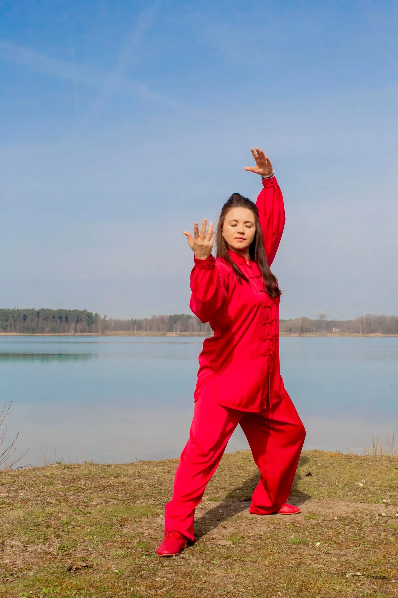
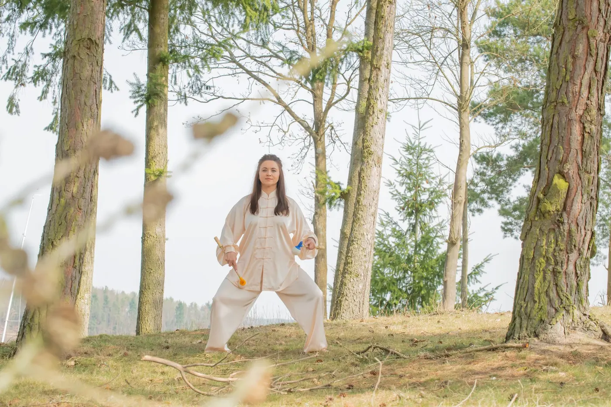
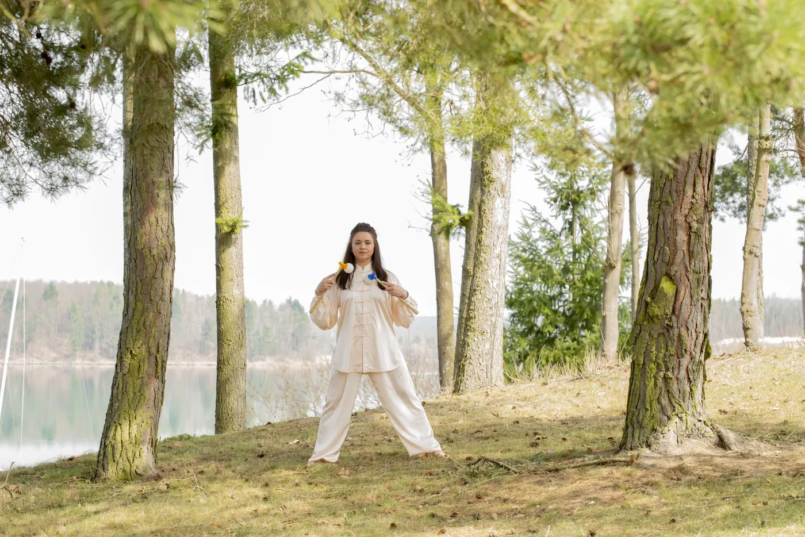

Qigong.Kurse in Wackersdorf · Einzelstunden in Steinberg am See
„Arbeit mit der Energie“: fließende Bewegungen, Atem, Konzentration — und Kraft. Unten fest im Stand, oben leicht. Das Qi kommt in Fluss, und du kommst bei dir an.

Viel mehr als eine Bewegungsform.
Qigong ist eine jahrhundertealte chinesische Übungsform, die Bewegung, Atmung und Konzentration verbindet. Im traditionellen chinesischen Verständnis steht dabei das Qi im Mittelpunkt — die Lebensenergie.
Bewusste Körperhaltungen, fließende Bewegungsabläufe, Atmung und Konzentration schulen die Wahrnehmung für den eigenen Körper. Die Übungen können ruhig und meditativ sein — und körperlich durchaus fordernd. Atem, Ruhe und Konzentration sind im Qigong auch ein Weg zur Stressregulation und zur Schlafgesundheit, zwei Schwerpunkte meiner Arbeit.
Bei Inna geht Qigong in die Kraft. Im Unterricht lernst du Taiji-Qigong von seiner kraftvollen Seite kennen — Kraft und Stabilität unten, Leichtigkeit und Freiheit oben.
„Wer regelmäßig Qigong übt, bekommt mit der Zeit die Geschmeidigkeit eines Kindes, die Kraft eines Holzfällers und die Gelassenheit eines Weisen.“ — taoistisches Sprichwort
Langsam bedeutet nicht leicht.
Ein stabiler Stand, bewusste Gewichtsverlagerungen und teilweise länger gehaltene Positionen. Je nach Übung und Intensität ist Qigong körperlich fordernd — das überrascht viele, die es nur mit sanften, leichten Bewegungen verbinden.
- Kraft in den BeinenDie langsamen, kontrollierten Bewegungen kräftigen vor allem die Beine.
- Sicherer StandKörperwahrnehmung, Koordination und Stabilität werden mit jeder Stunde geübt.
- Kraft und Ruhe zugleichRuhe, bewusste Atmung und Konzentration bleiben Teil des Übens — Kraft und Ruhe, Stabilität und Beweglichkeit, Konzentration und Entspannung verbinden sich zu einer besonderen Form des Übens.
Drei Termine die Woche.
Laoshan-Qigong im Mehrgenerationenhaus Wackersdorf — im Sommer auch draußen im Wald. Anfänger sind in allen drei Kursen willkommen. Bitte kurz anmelden, dann ist ein Platz für dich frei.
Stundenplan
Einzelstunden auf Anfrage — in Steinberg am See oder nach Absprache.


Meridianklopfen — Qigong zum Mitnehmen.
Beim Meridianklopfen kommt ein spezieller Meridianballklopfer zum Einsatz. Die Methode nach der Lehre von Prof. h. c. Sui Qingbo verbindet Elemente aus Akupressur, TuiNa und Qigong: Statt die Punkte mit den Fingern zu drücken, werden die Meridiane und bestimmte Akupressurpunkte durch sanftes, rhythmisches Klopfen angeregt — eine Form der stimulierenden Akupressur.
Nach dem traditionellen Verständnis der TCM bringt diese Stimulation das Qi in Bewegung und unterstützt den Energiefluss. Zusammen mit Qigong entsteht eine wohltuende Form der chinesischen Lebenspflege, die Bewegung, Körperwahrnehmung und Selbstfürsorge verbindet. Und das Schöne daran: Du lernst es leicht und nimmst es nach dem Kurs selbst in deinen Alltag mit.
Was Kursteilnehmer vorher wissen wollen.
Nein. Anfänger sind in allen drei Kursen willkommen, an jedem Wochentag. Laoshan-Qigong eignet sich für jedes Alter und jede Lebens- und Gesundheitssituation — die Bewegungen sind langsam, fließend und werden sitzend oder stehend geübt.
Mehr, als viele denken. Innas Qigong geht in die Kraft: fester Stand, Beinkraft, Muskeln, die arbeiten — und darüber Leichtigkeit in Schultern und Atem. Das Tempo bestimmst du.
Bequeme Kleidung, in der du dich frei bewegen kannst, und flache Schuhe oder Socken. Mehr braucht es nicht.
Eine Übung mit dem Meridianballklopfer nach der Lehre von Prof. h. c. Sui Qingbo: Durch sanftes Klopfen entlang der Meridiane und bestimmter Akupressurpunkte wird nach dem Verständnis der TCM der Energiefluss unterstützt. Du lernst es im Qigong-Kurs mit und kannst es danach selbst in deinen Alltag mitnehmen.
Ja, auf Anfrage — in Steinberg am See oder nach Absprache. Melde dich einfach kurz.
Im Mehrgenerationenhaus Wackersdorf. Montag 09:30 Uhr, Donnerstag 09:30 Uhr und 18:45 Uhr. Im Sommer geht es mit der Gruppe auch raus in den Wald.
Meine Angebote dienen dem Wohlbefinden und der Lebenspflege. Sie sind keine Heilbehandlung, ich stelle keine Diagnosen, und sie ersetzen keinen Besuch bei Ärztin oder Arzt.

Probier eine Stunde aus.
Komm einfach zu einem der drei Kurse, Anfänger sind willkommen. Oder melde dich vorher kurz, dann hält Inna dir einen Platz frei.
Kurz sagen, worum es dir geht — Kurs, Ernährung oder eine Anwendung.
Ein persönliches Gespräch: Wo stehst du, was wünschst du dir?
Kurs, Termin oder Ernährungsgespräch — Schritt für Schritt, in deinem Tempo.
Oder direkt anrufen: 0151 42548212